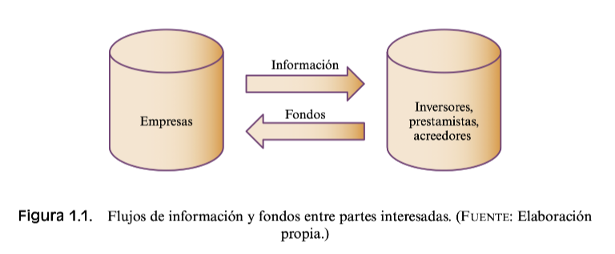

Duoc UC – Escuela de Administración y Negocios
2024-08-12
| Evaluación | Descripción breve | Peso |
|---|---|---|
| Parcial 1 | Presentación de la empresa y sus estados financieros; cálculo e interpretación de ratios de liquidez, financiamiento, gestión, rentabilidad y valorización. | 30 % |
| Parcial 2 | Determinación del capital de trabajo: niveles óptimos de activos y su financiación, ciclo de efectivo, efectivo y equivalentes, cuentas por cobrar e inventario. | 40 % |
| Parcial 3 | Cálculo de la rentabilidad de instrumentos de inversión y análisis de una cartera diversificada para evaluar el mejor portafolio. | 30 % |
| Examen transv. | Informe de la situación financiera de una empresa con información cualitativa y cuantitativa para plantear objetivos financieros y sugerir alternativas de inversión. | 40 % |
El promedio de los parciales representa el 60 % de la asignatura; el examen transversal corresponde al 40 % restante.
| Semana | Fechas (2025) | Principales actividades |
|---|---|---|
| 1 | 18–22 Agosto | Presentación inicial; 1.1 Entorno de la empresa |
| 2 | 25–29 Agosto | 1.2 Análisis vertical y horizontal; 1.3 Ratios de liquidez |
| 3 | 1–5 Septiembre | Ejercicios prácticos; 1.4 Ratios de endeudamiento |
| 4 | 8–12 Septiembre | 1.5 Ratios de rentabilidad; 1.6 Ratios de gestión |
| 5 | 15–19 Septiembre | 1.7 Ratios bursátiles; feriado institucional |
| 6 | 22–26 Septiembre | Ejercicios prácticos; Prueba 1 |
| 7 | 29 Sept.–3 Octubre | 2.2 Administración del efectivo |
| 8 | 6–10 Octubre | 2.2 Adm. del efectivo; 2.3 Adm. del inventario |
| 9 | 13–17 Octubre | 2.4 Adm. de cuentas por cobrar; ejercicios |
| Semana | Fechas (2025) | Principales actividades |
|---|---|---|
| 10 | 20–24 Octubre | — (sin actividades programadas) |
| 11 | 27–31 Octubre | Repaso de materia; Prueba 2 |
| 12 | 3–7 Noviembre | 3.1 Base conceptual; 3.2 Valorización de acciones |
| 13 | 10–14 Noviembre | 3.3 Bonos; 3.4 Derivados |
| 14 | 17–21 Noviembre | 3.5 Valorización de opciones; 3.6 Portafolio de inversión |
| 15 | 24–28 Noviembre | Ejercicios integradores; Prueba 3 |
| 16 | 1–5 Diciembre | Entrega de nota práctica; prueba recuperativa |
| 17 | 8–12 Diciembre | Feriado; semana sin actividades |
| 18 | 15–19 Diciembre | Repaso para examen transversal |
Objetivo. Comprender cómo las variables del entorno influyen en la situación financiera de una organización y aplicar técnicas de análisis financiero para emitir un diagnóstico fundamentado.
Componentes de aprendizaje
Componentes de aprendizaje (continuación)
La experiencia se desarrolla mediante actividades presenciales y no presenciales que combinan estudio de material, cálculo y análisis. Las primeras siete actividades introducen la base conceptual y los métodos de análisis:
Las actividades restantes profundizan en otros ratios y en casos prácticos:
Fuente: Chat GPT IA

El análisis del macro entorno identifica los factores generales que afectan a todas las empresas del mercado:
| Factor | Variables principales |
|---|---|
| Político | Políticas públicas, subvenciones, política fiscal, estabilidad gubernamental, regulación del comercio exterior, legislación laboral y antimonopolios |
| Económico | Ciclo económico, evolución del PIB, tipos de interés, oferta monetaria, inflación, desempleo, ingreso disponible y nivel de desarrollo |
| Social | Evolución demográfica, distribución del ingreso, movilidad social, estilo de vida, actitud consumista, nivel educativo y patrones culturales |
| Tecnológico | Innovación en TIC, inversión en I+D, grado de obsolescencia, madurez de tecnologías convencionales, desarrollo de nuevos productos y velocidad de difusión tecnológica |
| Ambiental | Normas de protección del medio ambiente, política energética, promoción del reciclaje y tratamiento de desechos |
En la actividad Variables del entorno se analiza el entorno competitivo de una empresa de retail (SMU - Unimark) a partir de su análisis razonado. La compañía opera en un mercado altamente competitivo. Algunos aspectos destacados del análisis son:
Descargar análisis completo (PDF)